りーぷ リール広告
インスタのリール広告
- 10/19時点の累計（インスタ広告画面）で、ドル払いは1ドル163.69円で換算。
- 「未配信」は10/19時点で配信されていない広告で、フォロー数が取れない広告はフォロー集計から除きます。
- 9/22に届いた5本のうち4本を広告にし（10/19時点は全て未配信）、1本は未投稿（10/6時点）です。
作り手ごとの合計
| 動画 | 広告費（円） | フォロー（人） | フォロー単価（円） | プロフィール閲覧（回） | 閲覧単価（円） | フォロー取得（本） |
|---|---|---|---|---|---|---|
| 片岡さん制作（10本） | 144,342 | 321 | 334 | 7,212 | 20 | 7/10 |
| 片岡さんの台本で作った動画（7/11・3本） | 97,490 | 124 | 289 | 4,729 | 21 | 2/3 |
| 店舗の素材から社内で制作（4本） | 99,747 | 25 | 504 | 7,317 | 14 | 2/4 |
片岡さん制作（10本）
| 投稿日 | 内容（投稿の冒頭） | 状態 | 広告費（円） | フォロー（人） | フォロー単価（円） | プロフィール閲覧（回） | 閲覧単価（円） |
|---|---|---|---|---|---|---|---|
| 10/3 | 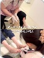 サンダルを履くとき | 未配信 | 7,068 | 34 | 208 | 320 | 22 |
| 9/30 | 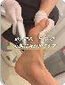 足の悩み、どこに相談 | 未配信 | 7,125 | – | – | 362 | 20 |
| 9/25 | 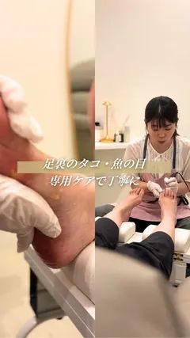 足裏のタコや魚の目 | 未配信 | 29,819 | – | – | 1,790 | 17 |
| 9/23 | 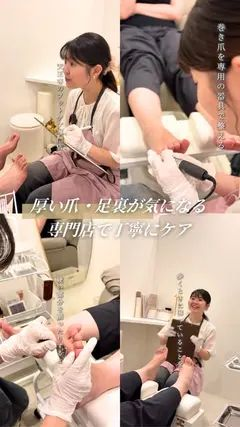 厚くなった爪や足裏 | 未配信 | 45,057 | 163 | 276 | 1,927 | 23 |
| 9/13 | 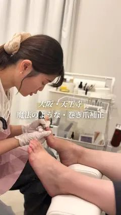 leapを始めた理由 | 停止 | 9,990 | 23 | 434 | 281 | 36 |
| 8/7 | 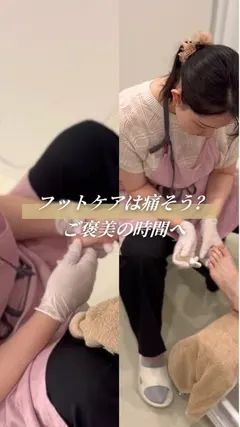 フットケアは痛そう（縦長版） | 停止 | 16,020 | 29 | 552 | 1,069 | 15 |
| 8/7 | 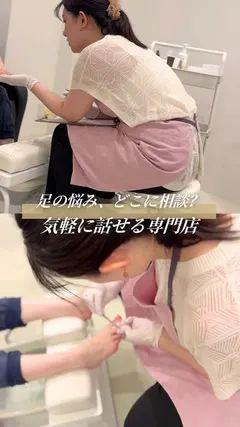 足の悩み、どこに相談（縦長版） | 停止 | 19,556 | 46 | 425 | 1,017 | 19 |
| 7/23 | フットケアは痛そう | 未配信（7月以降ほぼ消化なし） | 308 | – | – | 22 | 14 |
| 7/23 | 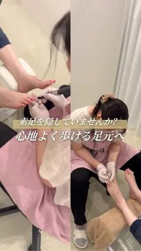 サンダルや温泉 | 停止 | 4,740 | 15 | 316 | 206 | 23 |
| 7/23 | 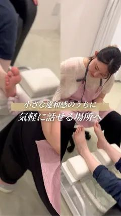 もっと早く相談 | 停止 | 4,659 | 11 | 424 | 218 | 21 |
片岡さんの台本で作った動画（7/11・制作者確認中）
| 投稿日 | 内容（投稿の冒頭） | 状態 | 広告費（円） | フォロー（人） | フォロー単価（円） | プロフィール閲覧（回） | 閲覧単価（円） |
|---|---|---|---|---|---|---|---|
| 7/11 | 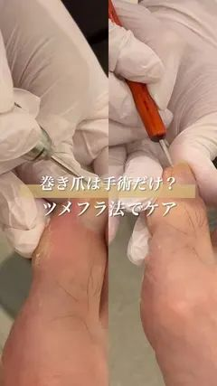 巻き爪は、手術するしかない | 未配信 | 61,641 | – | – | 2,952 | 21 |
| 7/11 | 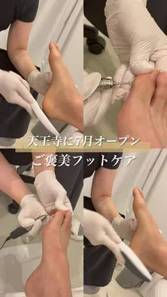 天王寺に「フットケア×リラクゼーション」（広告3回分の合計） | 停止 | 27,610 | 94 | 294 | 1,434 | 19 |
| 7/11 | 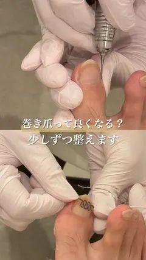 巻き爪って、本当に良くなるんですか？ | 停止 | 8,239 | 30 | 275 | 343 | 24 |
店舗の素材から社内で制作（4本）
| 投稿日 | 内容（投稿の冒頭） | 状態 | 広告費（円） | フォロー（人） | フォロー単価（円） | プロフィール閲覧（回） | 閲覧単価（円） |
|---|---|---|---|---|---|---|---|
| 7/22 | 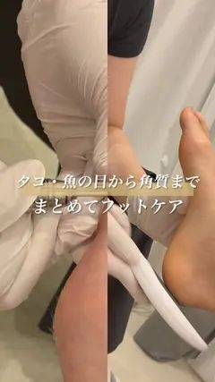 足のタコ・魚の目、かかと | 未配信 | 56,897 | – | – | 4,086 | 14 |
| 7/22 | 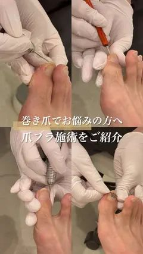 巻き爪が気になる方へ | 停止 | 30,252 | – | – | 2,456 | 12 |
| 7/22 | 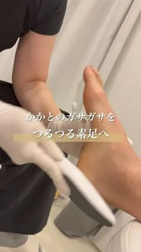 かかとのガサガサ | 停止 | 6,273 | 15 | 418 | 351 | 18 |
| 7/22 | 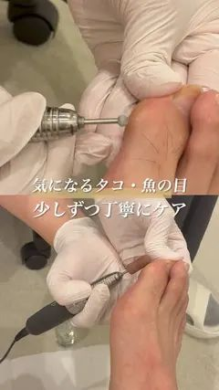 足裏のタコ・魚の目 | 停止 | 6,325 | 10 | 632 | 424 | 15 |
その他（制作者確認中）
| 投稿日 | 内容（投稿の冒頭） | 状態 | 広告費（円） | フォロー（人） | フォロー単価（円） | プロフィール閲覧（回） | 閲覧単価（円） |
|---|---|---|---|---|---|---|---|
| 7/20 | 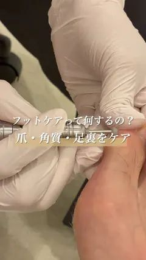 フットケアって何をするの？ | 停止 | 8,217 | 15 | 548 | 578 | 14 |
参考：美容整体（ReLUMI）
| 投稿日 | 内容（投稿の冒頭） | 状態 | 広告費（円） | フォロー（人） | フォロー単価（円） | プロフィール閲覧（回） | 閲覧単価（円） |
|---|---|---|---|---|---|---|---|
| 7/23 | 天王寺駅から徒歩3分 | 配信中 | 76,839 | 195 | 394 | 4,153 | 19 |
| 4/3 | 寝てるだけで姿勢が変わる | 配信中 | 313,782 | 1,039 | 302 | 18,240 | 17 |
| 9/22 | 周りのことを優先して（片岡さん制作） | 停止（10/6） | 14,224 | 6 | 2,371 | 351 | 41 |
| 5/13 | 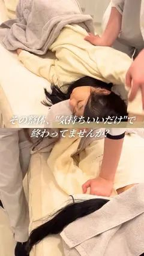 ReLUMIの施術はちょっと別格 | 停止 | 30,339 | 105 | 289 | 1,749 | 17 |
| 4/8 | 老けて見える原因は背中の硬さ | 停止 | 3,486 | 16 | 218 | 241 | 14 |
| 1/31 | 背中が丸くなり、老けて見える（埋もれた肩甲骨） | 停止 | 21,458 | 104 | 206 | 1,233 | 17 |